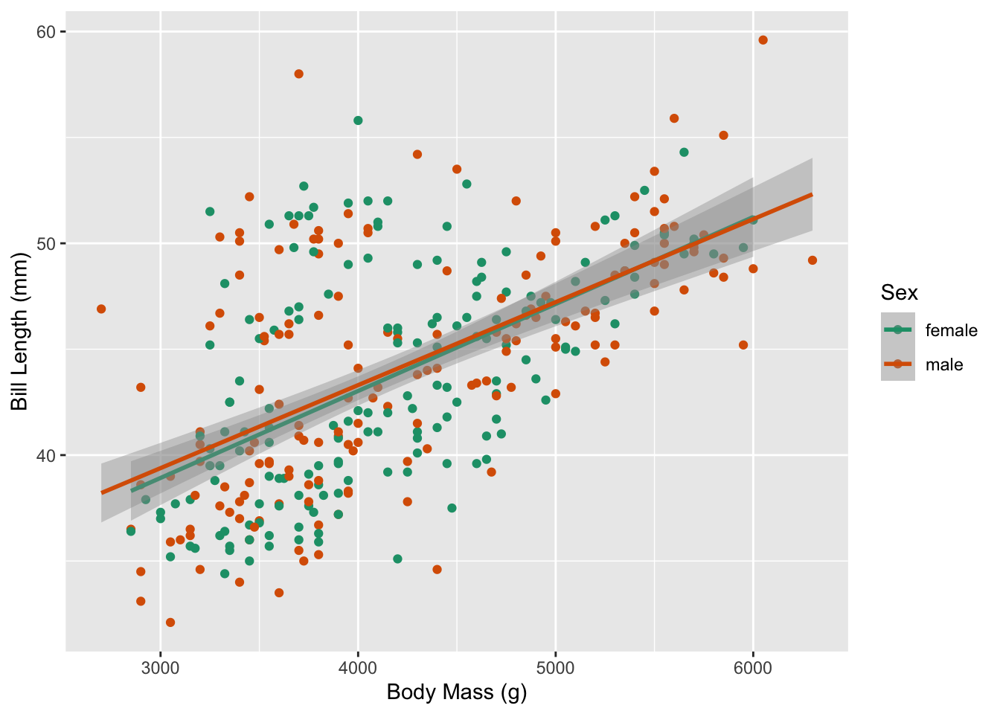
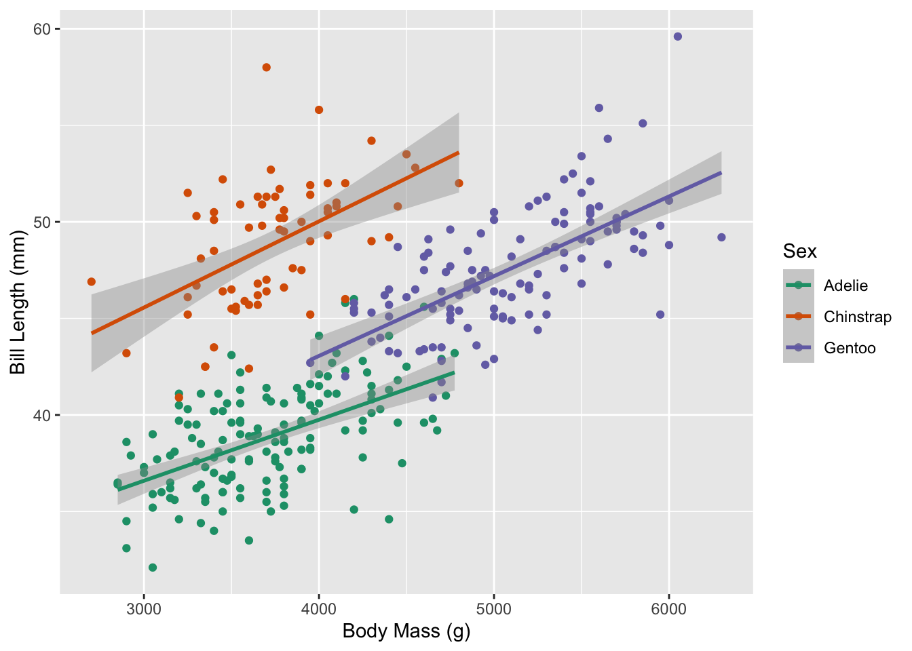
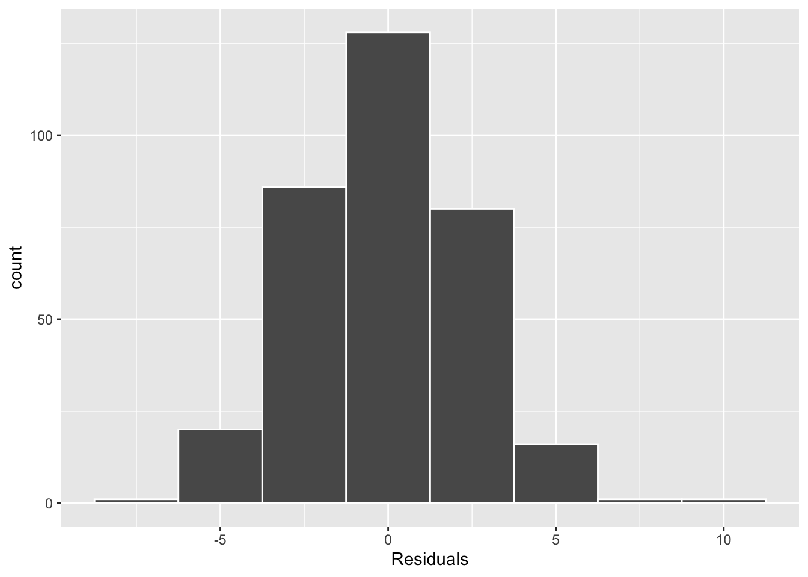
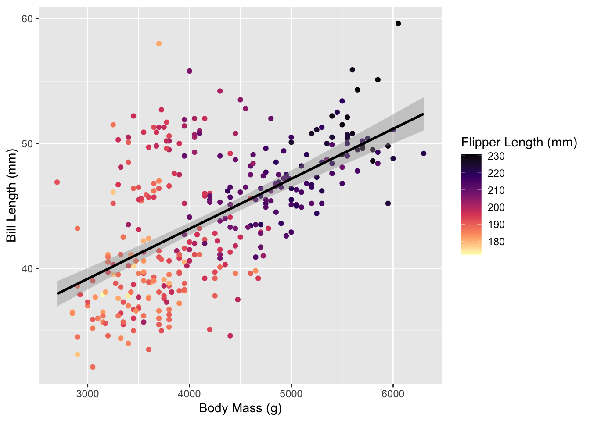

Week 8 – Extending to Multiple Linear Regression
0.1 Hypothesis Testing Refresher
Recall, the goal of a hypothesis test is to compare what we observed in our data to what we would have expected to occur if the null hypothesis was true. In the case of simple / basic regression, our null hypothesis assumes that there is no linear relationship between our explanatory variable and our response variable. In your first reading, you learned methods for generating statistics that could have happened if the null hypothesis was true, which we can compare our observed statistic with.
Why did we generate these statistics that could have happened if the null hypothesis was true? Well, this comes back to the idea of sampling distributions. If you remember, a sampling distribution is a distribution of statistics from taking repeated samples from the population. When we first learned about sampling distributions in Week 7, our sampling distribution made no assumptions about the samples that were being drawn (other than being representative). However, this week our sampling distributions take on a slightly different flavor, they assume the null hypothesis is true. So, our repeated samples are from an alternative universe where the null hypothesis is true.
1 Extending to Multiple Linear Regression
Similar to bootstrapping with a multiple linear regression, we can create multiple permutation distributions, one for every coefficient in our model.
1.1 How does the relationship between bill length and body mass change based on a penguin’s sex?
This research question involves one numerical explanatory variable (body mass) and one categorical explanatory variable (penguin sex). Notice the research question asks how the relationship between body mass and bill length changes for male versus female penguins, which is addressed with a different slopes (interaction) multiple linear regression.
Based on the scatterplot above, it appears the slopes for female penguins and male penguins are different. Let’s investigate this with a hypothesis test!
1.2 Simulation-based Methods (Permutation Distribution)
For this question, I am interested in testing if the relationship between body mass and bill length (slope) is different for male versus female penguins. If I were to write my hypotheses down, they would be:
\(H_0\): For penguins in the Palmer Archipelago, the relationship between a penguin’s body mass and their bill length is the same regardless of their sex
\(H_A\): For penguins in the Palmer Archipelago, the relationship between a penguin’s body mass and their bill length is different for male and female penguins
Using Cards
When generating new datasets that could have happened if the null hypothesis was true, it helps me to think about what actions I am taking with my dataset. As you’ve seen before, I like to think about this using cards.
- Suppose I have 333 cards, one card per penguin.
- On each card, I write the penguin’s (
bill_length_mm,body_mass_g,sex).
- On each card, I write the penguin’s (
- If I think the relationship between a penguin’s body mass and their bill length is the same regardless of the penguin’s sex (the null hypothesis), then I tear the
sexlabel off each card.- This leaves me with 333 cards with (
bill_length_mm,body_mass_g) measurements and 333 cards with differentsexlabels. Technically, I would have 165 cards sayingfemaleand 168 cards sayingmale.
- This leaves me with 333 cards with (
- I would then randomly draw one card from the (
bill_length_mm,body_mass_g) pile and one card from thesexpile and staple them together.- I would continue this process until every (
bill_length_mm,body_mass_g) card had a new value forsex.
- I would continue this process until every (
My resulting dataset would look something like this:
| bill_length_mm | body_mass_g | sex | shuffled_sex |
|---|---|---|---|
| 36.5 | 2850 | female | male |
| 46.4 | 4700 | female | female |
| 37.6 | 3750 | male | female |
| 39.0 | 3050 | female | male |
| 42.8 | 4700 | female | male |
| 52.7 | 3725 | male | female |
| 36.6 | 3475 | female | male |
| 50.7 | 4050 | male | male |
| 46.0 | 4150 | female | female |
| 43.5 | 4650 | female | male |
Now we can visualize the relationship between body mass and bill length for our shuffled dataset. Notice how the slopes for male and female penguins in the plot below are much more similar than the original plot? Why do you think that is? It’s because we assumed these relationships were the same (the null hypothesis) when we generated this permuted dataset!

Translating into the infer pipeline
To generate lots of these permuted datasets, we are going to use the infer package. The process for using these tools for a multiple linear regression are similar, but slightly different from what you saw with a simple linear regression. Namely, we specify() our model in a slightly different way, and we use the fit() function instead of the calculate() function.
Step 1: Fitting our Model
Similar to a basic regression, in our first step we need to obtain our observed statistic. To do this, we specify() the model we are interested in, and then tell infer to fit() this model. The code below does exactly that!
observed_fit <- penguins_clean %>%
specify(bill_length_mm ~ body_mass_g * sex) %>%
fit()
Specifying Your Model
When we have multiple explanatory variables, we need to use the “tilde” (~) syntax to specify our model. Keep in mind, we are interested in a different slopes multiple regression, so we are using a * to separate our two explanatory variables. If we were interested in a parallel slopes regression, we would us a + instead!
Step 2: Finding our Observed Statistic
Now that we’ve fit our model, we need to figure out which of these coefficients is our observed statistic. Which do you think it is?
| term | estimate |
|---|---|
| intercept | 25.571381438 |
| body_mass_g | 0.004278721 |
| sexmale | 5.516061110 |
| body_mass_g:sexmale | -0.001030075 |
Since we’re interested in how the slope between body mass and bill length differs between male and female penguins, our statistic is associated with the body_mass_g:sexmale row of this table.
Step 3: Generating Permuted Fits
Now that we have our observed statistic, we need to generate datasets that could have happened if the null hypothesis was true. Similar to basic regression, we obtain these permuted datasets by adding two steps:
we tell
inferourhypothesise()– the relationship between a penguin’s body mass and bill length is"independent"of its sexwe stipulate how many of these new datasets we want (
reps) and the methodinfershould use when generating these datasets ("permute")
null_fits <- penguins_clean %>%
specify(bill_length_mm ~ body_mass_g * sex) %>%
hypothesise(null = "independence") %>%
generate(reps = 1000, type = "permute") %>%
fit()Step 4: Visualizing our Null Distribution
We’ve used the visualize() function before, to obtain a histogram of our permuted statistics. With a multiple linear regression, the visualize() function generates a histogram for every coefficient. Since we are only interested in the body_mass_g:sexmale coefficient, I’ve pulled that one out:
obs_offset <- observed_fit %>%
filter(term == "body_mass_g:sexmale") %>%
pull(estimate)
null_fits %>%
filter(term == "body_mass_g:sexmale") %>%
ggplot(mapping = aes(x = estimate)) +
geom_histogram(color = "white", binwidth = 0.0005) +
geom_vline(xintercept = obs_offset, color = "red", lwd = 2)
Once again, our null distribution is centered at 0. In this context, 0 represents the offset when going from female penguins to male penguins, meaning the relationship between bill length and body mass does not change when going from female penguins (the baseline group) to male penguins.
Our observed statistic (-0.0010301) is noted in red. The statistic falls somewhat on the edge of the distribution, but not far into the tail. This location suggests our observed statistic could happen somewhat frequently if the null hypothesis was true.
Step 4: Calculating our p-value
Our final coding step is to calculate our p-value. To do this, we need three pieces of information:
- statistics that would have happened if the null was true
- our observed statistic
- the direction(s) that should be used when calculating the p-value
The direction of the hypothesis test is determined by the alternative hypothesis. For our research question, we are testing if there is a difference in the relationship between bill length and body mass, which aligns with a "two-sided" alternative hypothesis.
get_p_value(null_fits,
obs_stat = observed_fit,
direction = "two-sided") | term | p_value |
|---|---|
| body_mass_g | 0.000 |
| body_mass_g:sexmale | 0.220 |
| intercept | 0.000 |
| sexmale | 0.116 |
Once again, our statistic of interest is body_mass_g:sexmale. The p-value for this statistic is 0.22, telling us that 220 permuted statistics (out of 1,000) were as large or larger than what we observed in our data.
Step 5: Make a Decision & Reaching a Conclusion
For an \(\alpha\) of 0.1 (or 0.05 or 0.01), we would decide to fail to reject the null hypothesis (that he relationship between a penguin’s body mass and their bill length is the same regardless of their sex).
Therefore, our data provided insufficient evidence that the relationship between a penguin’s body mass and their bill length differs based on the sex of the penguin.
1.3 Theory-based Methods (t-distribution)
Similar to what you saw for a simple linear regression, if our data / model do not violate certain conditions, a \(t\)-distribution can be used as a reasonable approximation for the permutation distribution we just found. These conditions are:
- Linear relationship between our explanatory and response variable
- Independence of observations
- Normality of residuals
- Equal variance of residuals
Based on what we saw in Figure 1, it appears that there is a moderate linear relationship between body mass and bill length. From the description of how the data were collected (LTER and Gorman 2020), it doesn’t seem like the same penguin could be captured multiple times. I also know that a penguin could only belong to one of these two groups (male, female). However, it is possible penguins who were captured could be genetically related (from the same family), so there could be possible relationships between the observations.
Conditions three and four involve the residuals of the regression model, visualized in the two plots below. In Figure 2 (a) we see that the distribution of residuals is unimodal and fairly symmetric. While it does appear that there is a slight right skew, I am not super concerned as there are very few observations in the right tail. In Figure 2 (b) we see that the vertical spread of the residuals (on the y-axis) appears similar across the fitted / predicted values of bill length, with most of the residuals falling between +10 and -10.


As I did not find that any of these conditions were violated, it seems reasonable to use the \(t\)-distribution as an approximation for the permutation distribution.
Using the \(t\)-distribution
If you continue along in your R adventures, you will find that the majority of functions built-in to R use parametric / theory-based methods to obtain p-values and confidence intervals. In fact, our familiar friend the get_regression_table() function does just that!
sex_lm <- lm(bill_length_mm ~ body_mass_g * sex,
data = penguins_clean)
get_regression_table(sex_lm)| term | estimate | std_error | statistic | p_value | lower_ci | upper_ci |
|---|---|---|---|---|---|---|
| intercept | 25.571 | 2.015 | 12.693 | 0.000 | 21.608 | 29.534 |
| body_mass_g | 0.004 | 0.001 | 8.323 | 0.000 | 0.003 | 0.005 |
| sex: male | 5.516 | 2.830 | 1.949 | 0.052 | -0.051 | 11.083 |
| body_mass_g:sexmale | -0.001 | 0.001 | -1.536 | 0.126 | -0.002 | 0.000 |
Remember, for this research question we are interested in the body_mass_g:sexmale coefficient. Looking at the row of the regression table associated with body_mass_g:sexmale, we first see two things we’ve seen before (1) our observed statistic of -0.0010301, and (2) an estimate of the variability of that statistic (standard error). The next two columns are new!
The statistic column represents the value of the \(t\)-statistic. This statistic is calculated as \(\frac{\text{estimate}}{\text{SE of the estimate}}\). In general, you can think of a \(t\)-statistic as a way to standardize how “surprising” an estimate is, if the null hypothesis was true. In most cases, values larger than 2 are thought to indicate statistics that would be very “unusual” if the null hypothesis was true.
Finally, the p_value column finds where the \(4\)-statistic falls on the \(t\)-distribution and calculates its resulting p-value. By default, the p-value is calculated using both sides (similar to using "two-sided" before). The \(t\)-distribution returns a p-value of 0.126. While this p-value leads to a similar decision and conclusion as the p-value we obtained from the permutation distribution, it is about 0.1 lower than our previous p-value. Why do you think that is?
1.4 How does the relationship between bill length and body mass change based on a penguin’s species?
Let’s change our investigation of the relationship between a penguin’s bill length and body mass to focus on differences between species of penguins.

We’ve outlined two tools we can use to carry out this analysis, (1) a permutation distribution, and (2) a \(t\)-distribution. Since it is easier (less coding) to use a \(t\)-distribution, I generally start by inspecting my regression conditions to see if this would be a reasonable approach.
Looking at Figure 3, it appears that all three species have a linear relationship between body mass and bill length. Similar to our previous discussion, without knowing more about the possibility of sampling penguins who are genetically related, we don’t have evidence that the independence condition is violated.
So, we turn to our residual analysis. In Figure 4 (a), we see that the distribution of residuals is unimodal and symmetric, so the normality condition is not violated. Finally, Figure 4 (b) suggests the variance in the residuals is fairly similar across the predicted bill lengths, going from about -5 to +5.


As I did not find that any of these conditions were violated, it seems reasonable to use the \(t\)-distribution as an approximation for the permutation distribution.
Obtaining our p-value
Alrighty, let’s use the get_regression_table() to get our p-value for this test!
species_lm <- lm(bill_length_mm ~ body_mass_g * species,
data = penguins_clean)
get_regression_table(species_lm)| term | estimate | std_error | statistic | p_value | lower_ci | upper_ci |
|---|---|---|---|---|---|---|
| intercept | 27.113 | 1.632 | 16.609 | 0.000 | 23.902 | 30.324 |
| body_mass_g | 0.003 | 0.000 | 7.228 | 0.000 | 0.002 | 0.004 |
| species: Chinstrap | 5.061 | 3.310 | 1.529 | 0.127 | -1.451 | 11.573 |
| species: Gentoo | -0.575 | 2.794 | -0.206 | 0.837 | -6.072 | 4.922 |
| body_mass_g:speciesChinstrap | 0.001 | 0.001 | 1.475 | 0.141 | 0.000 | 0.003 |
| body_mass_g:speciesGentoo | 0.001 | 0.001 | 1.558 | 0.120 | 0.000 | 0.002 |
Hmmm…🤔. Last time we had one line that we were interested in (body_mass_g:sexmale), but now we have two lines. What gives?
Multiple Hypothesis Tests
Technically, each of these lines is testing if that group has a different slope than the baseline group. Meaning, the body_mass_g:speciesChinstrap line is running the following hypothesis test:
\(H_0\): For penguins in the Palmer Archipelago, the relationship between a penguin’s body mass and their bill length is the same for Adelie and Chinstrap penguins
\(H_A\): For penguins in the Palmer Archipelago, the relationship between a penguin’s body mass and their bill length is different for Adelie and Chinstrap penguins
Similarly, the body_mass_g:speciesGentoo line is testing:
\(H_0\): For penguins in the Palmer Archipelago, the relationship between a penguin’s body mass and their bill length is the same for Adelie and Gentoo penguins
\(H_A\): For penguins in the Palmer Archipelago, the relationship between a penguin’s body mass and their bill length is different for Adelie and Gentoo penguins
This doesn’t quite seem like what I want. I want to test if all of the species have the same relationship!
Testing 3+ Groups
When I’m in the scenario where I have three or more groups, a \(t\)-distribution isn’t the best tool for the job since it only allows us to test each group relative to the baseline. An ANOVA (analysis of variance), however, can test for differences among three or more groups!
If you’ve never encountered an ANOVA before, it has a large number of similarities to what we saw with the \(t\)-distribution. There are, however, two main differences. First, an ANOVA has slightly different hypotheses. Since we have three or more groups, our hypotheses are no longer in terms of comparing one group with another. Instead, our hypotheses test for similarities / differences among all of the groups. Specifically, we have the following hypotheses:
\(H_0\): For penguins in the Palmer Archipelago, the relationship between a penguin’s body mass and their bill length is the same regardless of their species
\(H_A\): For penguins in the Palmer Archipelago, the relationship between a penguin’s body mass and their bill length is different for at least one species
Mathematical Negation
An alternative hypothesis is always the negation of the null hypothesis. In an ANOVA, the null hypothesis says “every group is the same.” The negation of “every group is the same” is not “every group is different.” The negation of “every group is the same” is “at least one group is different.”
ANOVA
To carry out an ANOVA, we use the anova() function in R. The output of the anova() function is messy, so I’m piping the result into the tidy() function (from the broom package) to clean it up a bit!
anova(species_lm) %>%
tidy()| term | df | sumsq | meansq | statistic | p.value |
|---|---|---|---|---|---|
| body_mass_g | 1 | 3449.82317 | 3449.823171 | 591.920719 | 0.0000000 |
| species | 2 | 4553.33934 | 2276.669668 | 390.631021 | 0.0000000 |
| body_mass_g:species | 2 | 19.92386 | 9.961928 | 1.709268 | 0.1826114 |
| Residuals | 327 | 1905.81634 | 5.828185 | NA | NA |
In the ANOVA table, we are interested in the body_mass_g:species line. Specifically, we are interested in the statistic and p.value columns. We will learn more about the statistic column when we dive deeper into ANOVA next week, so for right now know that it is a measure of how much additional variation in bill length is being explained by having different slopes for each species.
Based on the p.value column, it doesn’t seem like there is evidence that the relationship between a penguin’s body mass and their bill length is different for at least one species.
1.5 How do body mass and flipper length influence a penguin’s bill length?
Our multiple linear regressions take take on a variety of flavors, including models with multiple numerical explanatory variables. An example of this type of model is adding flipper length as a second explanatory variable (in addition to body mass) when explaining the length of a penguin’s bill. This type of investigation is similar to what many of you did for your Midterm Project, where you decided if there was evidence that both explanatory variables have a relationship with the response.
Based on the scatterplot below, it does seem that both body mass and flipper length have a relationship with a penguin’s bill length. As the color of the points gets darker (longer flippers), a penguin’s bill length also increases.

Which method?
As said before, we have two tools we can use (1) a permutation distribution, and (2) a \(t\)-distribution. Let’s see which tool seems like the best option.


Looking at Figure 6 (a) and Figure 6 (b), it appears that both variables have a linear relationship with bill length. Similar to our previous discussion, without knowing more about the possibility of sampling penguins who are genetically related, we don’t have evidence that the independence condition is violated.
So, we turn to our residual analysis. In Figure 7 (a), we see that the distribution of residuals is unimodal and symmetric, so the normality condition is not violated. Finally, Figure 7 (b) suggests the variance in the residuals is fairly similar across the predicted bill lengths, going from about -10 to +10.


As I did not find that any of these conditions were violated, it seems reasonable to use theory-based methods as an approximation for the permutation distribution.
Obtaining our p-value
Unfortunately, when testing for a relationship between each explanatory variable and the response, the get_regression_table() function does not do what we want. What we want is for the p-value for each variable to be conditional on the other variable(s) in the model, but the p-values for variables output from get_regression_table() are tested in the order they are listed. Meaning, if body_mass_g is the first variable listed in the model, then the p-value output is not conditional on flipper_length_mm also being included in the model.
But we have a tool that will give us what we want! An ANOVA!!!
Multiple Hypothesis Tests
mlr_anova <- lm(bill_length_mm ~ body_mass_g + flipper_length_mm,
data = penguins_clean)
anova(mlr_lm)| term | df | sumsq | meansq | statistic | p.value |
|---|---|---|---|---|---|
| body_mass_g | 1 | 3449.8232 | 3449.82317 | 200.48905 | 0 |
| flipper_length_mm | 1 | 800.7561 | 800.75612 | 46.53654 | 0 |
| Residuals | 330 | 5678.3234 | 17.20704 | NA | NA |
Technically, each of these lines is testing if there is a relationship between the explanatory variable and the response, controlling for the other variable(s) in the model. Meaning, the flipper_length_mm line is running the following hypothesis test:
\(H_0\): For penguins in the Palmer Archipelago, controlling for a penguin’s body mass there is no relationship between a penguin’s flipper length and their bill length
\(H_A\): For penguins in the Palmer Archipelago, controlling for a penguin’s body mass there is a relationship between a penguin’s flipper length and their bill length
Similarly, the body_mass_g line is testing:
\(H_0\): For penguins in the Palmer Archipelago, controlling for a penguin’s flipper length there is no relationship between a penguin’s body mass and their bill length
\(H_A\): For penguins in the Palmer Archipelago, controlling for a penguin’s flipper length there is a relationship between a penguin’s body mass and their bill length
Given the p-values output from the table, it appears that after controlling for a penguin’s flipper length, there is a relationship between a penguin’s body mass and bill length (p-value < 0.0001). Similarly, there is also evidence that (after controlling for a penguin’s body mass) there is a relationship between the length of a penguin’s flipper and its bill length (p-value < 0.0001).
References
LTER, Palmer Station Antarctica, and Kristen Gorman. 2020. “Structural Size Measurements and Isotopic Signatures of Foraging Among Adult Male and Female Adélie Penguins (Pygoscelis Adeliae) Nesting Along the Palmer Archipelago Near Palmer Station, 2007-2009.” Environmental Data Initiative. https://doi.org/10.6073/PASTA/98B16D7D563F265CB52372C8CA99E60F.